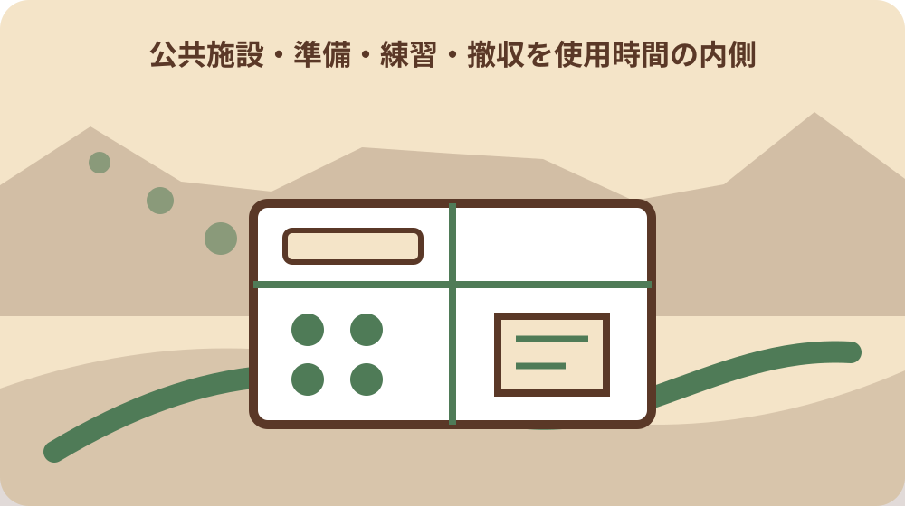
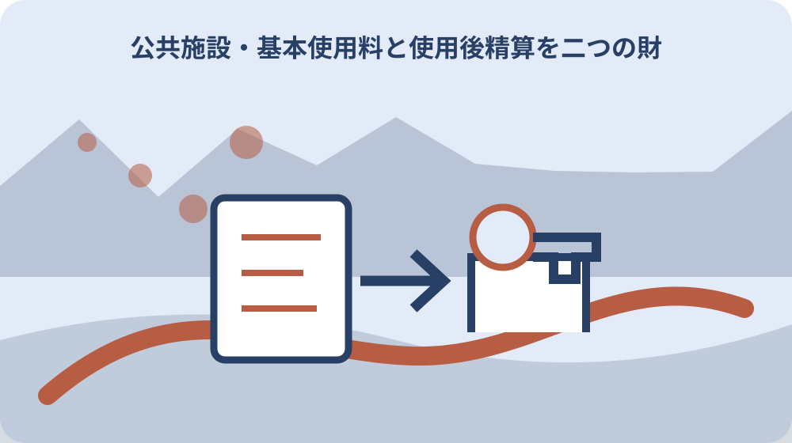

先に結論を確認する
この記事の答え：いいえ。森町公式案内では、空き確認後に問い合わせた段階でも予約は完了していません。使用許可申請書を期間内に提出し、許可の確認までを別々に記録してください。
森町で最初に照合する条件：空き状況の照会、利用希望の問い合わせ、使用許可申請を別の段階として記録し、問い合わせだけを予約完了と扱わない。
空き照会と予約完了の間にある段階を見える化する
森町文化会館を使うとき、ウェブ上の空き表示を見ただけでは会場を確保したことになりません。町の案内は、空き状況を確認して会館へ希望日を問い合わせても、その段階では予約完了ではないと明記しています。
記録表には「空き表示を見た日」「電話した日」「使用許可申請書を出した日」「許可を確認した日」の四欄を設けます。同じ日付でも意味が違うため、一つの予約日欄へまとめないことが肝心です。
問い合わせ時は施設名、利用日、開始と終了の希望時刻、催しの概要、連絡担当者を読み上げられる形にします。担当者名と回答時刻も残せば、後で申請内容を整えるときに確認経緯へ戻れます。
公式の予約状況は計画の入口として便利ですが、最新状況は電話で確認するよう町が案内しています。画面の保存時刻を書き、連絡までに別の申請が入る可能性を含めて次の行動を決めます。
候補日が複数ある場合は、空きの有無だけでなく申請受付が始まっているかも日ごとに確かめます。問い合わせ表には第一希望へ固執する理由と、動かせる条件を分け、回答を受けながら代替日へ切り替えられるようにします。
問い合わせ後は次に行う提出を担当者へ割り当てます。「会館へ電話済み」という報告だけで団体内の作業を止めず、申請書作成、代表者確認、添付資料の準備にそれぞれ期限を置きます。
空きがなかった場合も、確認した日時と施設を消しません。候補変更の理由が残れば、出演者へ説明しやすくなり、同じ日時を別の担当者が重ねて問い合わせる無駄も防げます。
申請者名と当日の会場責任者を分けて登録する
申請者は許可や納付書を受け取る主体であり、催事当日の受付係や舞台担当と同じとは限りません。団体名だけで終えず、代表者、書類担当、会場責任者、緊急連絡者を役割別に記録します。
申請書へ記載する住所や電話番号は、団体内の古い名簿を写さず、提出時点の情報を本人に確かめます。納付書や会館からの連絡を誰が受け取り、誰へ共有するかも一緒に決めておきます。
当日の責任者が途中で交代するなら、在館する時間帯を分けます。鍵、備品、来場者対応、退館確認を誰が引き継ぐかまで書けば、許可を得た申請者だけへ実務が集中するのを防げます。
個人情報を含む申請書を団体の共有チャットへ置く必要はありません。共有用台帳には受付番号、利用日時、担当役割だけを載せ、原本の保管者と保管期限を別に決めます。
代表者が申請後に交代する予定なら、いつ誰へ変更を伝えるか会館へ相談します。旧代表の連絡先を無断で残すのではなく、新旧担当者の同意と書類上の変更方法を確認して、連絡不能を防ぎます。
会場責任者には許可内容の要点、利用時間、禁止事項、職員への連絡方法を渡します。申請書原本を持たせるだけで説明を終えず、当日に判断を求められそうな場面を読み合わせます。
当日連絡者の電話がつながらない場合に備え、第二連絡者も会館へ伝えるべきか確認します。団体内の名簿を丸ごと渡さず、必要な役割と連絡範囲を絞って共有します。
大・小ホールと諸室で異なる受付日を逆算する
大ホールは使用日の十二か月前から三十日前、小ホールは六か月前から五日前、その他施設は三か月前から五日前が申請期間です。施設名を確定しないまま締切だけを予定表へ入れると誤りが生じます。
受付開始は該当月の一日午前九時で、一日が休館日ならその月最初の開館日です。単純に一年前の日付へ印を付けず、文化会館の休館日と開館状況を確認して実際の受付日を台帳へ書きます。
複数室を同時に使う催しは、各室の受付期間がそろうとは限りません。主会場、控室、練習室を別行にし、いつから申請できるかを会館へ尋ねて、提出を一括できるか確認します。
締切直前では希望施設を取れない可能性があります。候補日を第一、第二まで用意し、出演者や家族が変更できる最終日を先に集めておくと、空き照会後の相談を速やかに進められます。
十二か月前、六か月前、三か月前という起点は、年間予定表に施設別の色で表示します。月初の受付へ向けて一週間前に内容確認日を置き、代表者の署名や団体内承認が遅れないようにします。
受付終了日まで余裕があっても、広報や外部業者の発注には別の締切があります。会館申請、出演依頼、印刷、保険などを一列に並べ、会場許可前に取消不能な発注をしない順番を決めます。
利用日を変更したときは、新しい日付から受付期間を計算し直します。最初の候補日の締切をそのまま使わず、施設区分、月初の開館日、受付終了日をもう一度会館へ確認します。

利用目的を来場者の動きまで具体化して伝える
利用目的は「会議」「発表会」とだけ書かず、誰が何人ほど集まり、舞台、客席、控室をどう使うかへ分解します。物品販売、飲食、寄附募集、掲示を予定するなら、可否を事前に会館へ確認します。
来場者の受付位置、開場時刻、終演後の退出経路を図にすると、必要な利用時間と部屋が見えます。高齢者や車いす利用者、乳幼児連れの来場を想定する場合は、移動や待機場所も相談項目にします。
音を伴う催しは、演奏や拡声の時間だけでなく音出し確認も伝えます。近隣や別室への影響を主催者だけで判断せず、予定する機材、人数、音量の特徴を会館に示して条件を確かめます。
利用目的が申請後に変わった場合、元の許可範囲のまま実施できると決めつけません。変更内容、発生日、会館へ連絡した日、必要とされた書類を一組にして記録し、口頭連絡で終えないようにします。
参加費を集める催しは、金額、集金場所、領収方法、返金条件を整理して会館へ必要な確認を行います。施設内での物品販売や寄附募集を当然にできると思わず、告知を出す前に可否を確かめます。
舞台を使わない集会でも、机や椅子の配置、受付の列、休憩中の移動を図にします。目的の説明と来場者の動きが一致していれば、必要な部屋と時間を過不足なく会館へ伝えられます。
撮影や配信を行う場合は、機材、電源、来場者への案内、映り込みへの対応を整理します。配信ができる設備や通信環境があると推測せず、必要条件と持込み可否を会館へ尋ねます。
準備・練習・撤収を使用時間の内側へ収める
町の利用案内では、使用時間に準備、練習、後片付けなど必要な一切の時間が含まれます。本番が午後二時からでも、搬入や客席設営を始める時刻から、原状へ戻して退出する時刻までを申請対象にします。
進行表は搬入、設営、音響確認、出演者集合、開場、本番、退場、清掃、点検の順に分けます。各工程へ担当者と必要分数を置けば、本番時間だけを基準にした無理な予約を避けられます。
予定より早く到着した物品や出演者を、許可時間前に館内へ入れられるとは限りません。搬入車の到着幅、荷下ろし場所、待機の可否を確認し、運送担当にも許可時間を伝えます。
延長が必要になりそうな催しは当日の判断へ任せず、会館案内にある延長条件を事前に確認します。終演が押した場合に省けない安全確認と、短縮できる撤収作業を主催者内で区別します。
楽屋や会議室を出演者が使う時間も全体工程へ含めます。本番終了後に着替えや荷造りが残るなら、客席撤収と並行できる作業、退出確認が必要な作業を分け、最後の責任者を決めます。
清掃用具やごみの扱いは持参物一覧へ加え、会館で借りられると推測しません。原状回復の基準、持ち帰る物、職員と確認する場所を事前に聞き、退館直前の混乱を減らします。
基本使用料と使用後精算を二つの財布で管理する
施設使用料は申請後に発行される納付書で、使用日前日までに指定金融機関へ納めます。文化会館窓口では支払えないため、納付担当者、金融機関へ行く日、受領印付き控えの保管場所を決めます。
大小ホールでマイクなどの備品や空調を使う場合、その料金は使用後に精算されます。基本使用料と同じ納付書だと思わず、利用後に発行される納付書を受け取る担当も予約台帳へ残します。
使用後精算は納付書の発行日から二週間以内です。催事終了を会計終了日とせず、請求受領、団体内承認、金融機関での納付、控え共有までを残作業として一覧にします。
予算表には確定した施設料と、使用量で変わり得る備品・空調料を別枠で置きます。私は、見積額に余裕を持たせ、会館へ最新料金と減免の対象、必要書類を個別に確認するのが安全だと考えます。
団体口座から納める場合は、承認に必要な日数を使用日前日から逆算します。立替えを前提にせず、納付書を受け取った人が会計担当へ渡した日と、支払い控えが戻った日を記録します。
使用後の納付書が代表者宅へ届くのか、窓口で渡されるのかも確認します。催事後に担当者の役割が終わったと思い込まないよう、精算完了の連絡先を台帳の最後に残します。
変更が出たとき旧内容と新内容を対にして残す
森町文化会館は使用変更申請書の様式を用意しています。日時、施設、目的、責任者などに変更が出たら、変更前、変更後、理由、発生日を一行で対比し、どの項目を会館へ伝えたか残します。
出演者名の小さな変更と、利用目的や使用室が変わる変更では確認事項が違います。団体内で軽微と決めず、許可内容へ影響するかを会館に尋ね、提出書類と新しい許可の確認方法を記録します。
電話で変更を相談した場合も、通話相手、日時、回答、次に出す書類を追記します。旧版の進行表には「無効」と日付を付け、新版の番号を全担当へ知らせて、当日二種類が混在しないようにします。
変更により料金や納付期限が動くかも同時に確認します。会場だけ修正して会計担当へ伝え忘れると、期限内に支払えないおそれがあるため、変更記録には会計への通知欄を必ず設けます。
来場予定者へ変更を告知するときは、会館から変更手続の確認を得た内容を基準にします。未確定の候補を決定事項として広めず、更新日時と問い合わせ先を付けて古い案内との差を示します。
変更後の収容人数や避難動線も見直します。部屋を替えただけに見えても、入口、控室、音響、搬入経路が変わるため、当日運営表と持込物一覧を同じ版へ更新します。
取消期限と還付されない負担を開催前に共有する
使用を取り消す場合、町の案内は使用許可申請期間内に取消願を提出するよう求めています。催し中止を内部で決めただけでは手続完了ではないため、様式提出日と会館の受理確認を分けます。
利用者の都合による取消では使用料を還付できない旨も示されています。出演者の都合、集客不足、天候への不安など、主催者側の中止判断が費用へどう影響するかを申請前に共有します。
開催可否を決める日を申請時点で設定し、判断に必要な人数、資金、交通、警報などの材料を列挙します。ただし個別事情での扱いを記事から断定せず、取消前に会館へ最新の取扱いを確認します。
中止時は会館手続だけでなく、来場予定者、出演者、業者への連絡も必要です。連絡文には中止理由を必要以上に載せず、日時、返金の有無、問い合わせ先を統一して誤案内を防ぎます。
取消願を提出する人と、会館から受理連絡を受ける人を決めます。郵送や持参など提出方法は会館へ確かめ、送った時刻だけで完了とせず、受理された日と未処理事項を記録します。
中止後にも外部業者の解約料や参加費の返金が残る場合があります。会館使用料の扱いと混ぜず、契約先ごとの条件、期限、担当者を別表にし、団体の会計報告へ反映します。
定員・持込物・音量を当日運営表へ落とし込む
町の利用案内は収容定員を超える入場、危険物の持込み、他の利用者へ迷惑となる騒音などを禁じています。定員は申込人数ではなく、スタッフや出演者を含めた扱いを会館へ確認します。
持込物一覧には品名、数量、搬入者、使用場所、電源の有無を記します。火気、液体、大型装飾、動物、飲食物がある場合は、許可の可否と養生や撤去方法を事前に相談します。
掲示、物品販売、寄附募集、飲食は主催者が通常行っている行為でも、会館内で同じようにできるとは限りません。実施場所、時間、金銭管理を示し、必要な許可を確認してから告知します。
当日運営表の末尾には原状確認を置きます。設備の異常や汚損に気づいたら写真だけで自己判断せず、時刻と場所を添えて職員へ伝え、指示された対応と引渡し結果を残します。
受付では入場者数を一定間隔で数え、定員へ近づいた場合の入場対応を事前に決めます。主催者判断で通路へ席を追加せず、空席配置や関係者席の扱いを会館と共有します。
災害や体調不良が起きたときの館内連絡先、避難誘導、救急要請の担当を確認します。催事内容とは別に安全欄を作り、スタッフ集合時に出口と消火設備の位置を読み合わせます。

家族や団体に残す予約台帳を一枚にまとめる
予約台帳の上段には施設名、利用日時、許可を受けた目的、申請者、会場責任者、会館連絡先を置きます。中段は照会、申請、許可、事前納付、利用、使用後納付の六工程に分けます。
下段には変更履歴、取消判断日、持込確認、参加予定数、緊急連絡を置きます。書類原本をすべて貼るのではなく、文書名、版、保管者、提出日を索引にして必要な原本へたどれるようにします。
家族行事で代表者が高齢の場合も、本人の名義を勝手に変えません。連絡や納付を補助する人を別に置き、誰が会館からの説明を受けたか記録して、本人へ確認内容を戻します。
団体の恒例行事でも前年の台帳をそのまま複製せず、受付期間、料金、様式、休館日を毎回公式ページと会館で確認します。変更がなかった項目にも確認日を入れると、古い条件との混同を防げます。
紙の台帳には更新者と更新日を入れ、電子版には版番号を付けます。会館から新しい回答を受けたら一か所だけ直すのではなく、申請、会計、当日運営の関連欄を確認します。
催事終了後は次回への反省だけでなく、納付と書類返却が済んだかを確認します。個人情報を含む不要な複製は安全に処分し、許可書や会計控えは団体の保管規則に沿って残します。
大石の視点：会場確保を不動産の段取りから考える
私は、公共施設の予約も不動産の引渡しと同じく、「使えるらしい」と「使用を許可された」を分けることが出発点だと考えます。空き表示は有力な情報ですが、申請と許可の記録が整って初めて次の準備へ進めます。
小さな団体ほど一人が申請、広報、会計、当日運営を抱えがちです。役割を細かく分けるのは責任逃れではなく、誰かが動けない日に別の人が台帳を読み、期限を守るための実務です。
会場の価値は広さや料金だけで決まりません。搬入路、準備時間、退出時刻、来場者の移動、取消時の負担まで並べて、催しの目的に合うかを見ます。必要なら規模を小さくする選択も残します。
まだ開催を決め切れない段階でも、候補日と人数、支払時期を一枚にして会館へ相談できます。私は、予約を急がせるより、不明点と判断期限を見える形にすることが地域活動を長続きさせると考えます。
家族の記念行事でも地域団体の公演でも、会場費だけでなく移動と準備の負担を見ます。高齢の参加者が多いなら、開場前の待機や送迎車の動きを会館へ相談し、規模を調整します。
建物を使う権利には時間と条件があります。私は、許可内容を守ることが施設を次の利用者へ良い状態で渡す基本だと考え、原状確認と使用後精算までを一つの予約として扱います。
森町文化会館へ確認する順番と今日の一歩
最初に利用日、施設、時間、目的、人数を仮置きし、公式の予約状況を見ます。次に文化会館へ電話し、最新の空き、申請開始日、提出期限、目的に伴う注意を確認して、回答者と時刻を記録します。
その後に所定の使用許可申請書を整えます。電話や口頭のみでは使用許可申請にならないため、提出方法、必要な添付、受理の確認、許可の連絡方法を会館へ尋ね、提出控えを保管します。
許可後は納付書の期限と指定金融機関を確認し、当日までの進行表を作ります。利用後には備品・空調の精算が残る場合があるので、会計を閉じる日を納付完了後に設定します。
今日できる一歩は、候補日の空きだけを眺め続けることではありません。「照会済み・未申請」と書いた一枚を作り、文化会館の取扱時間内に電話する担当者と時刻を決めることです。
電話番号0538-85-1111と取扱時間九時から十七時を台帳へ書き、月曜休館の扱いも確認します。電話時には候補日を二つ用意し、申請開始日と必要書類を復唱します。
確認結果が希望と合わなければ、日付、施設、催事規模のどれを変えられるか団体へ持ち帰ります。無理に即答せず、次の連絡期限を会館と共有してから選択肢を比較します。